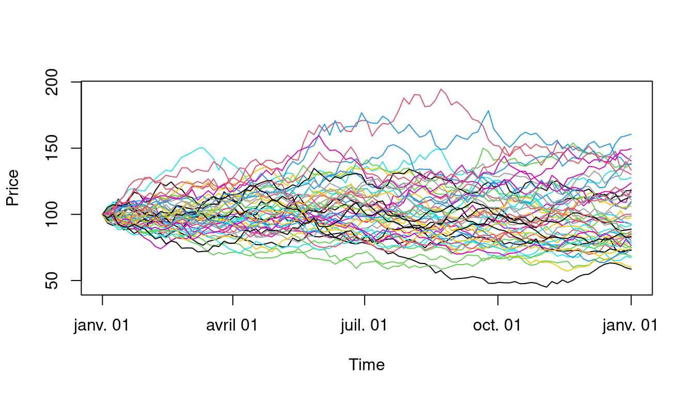
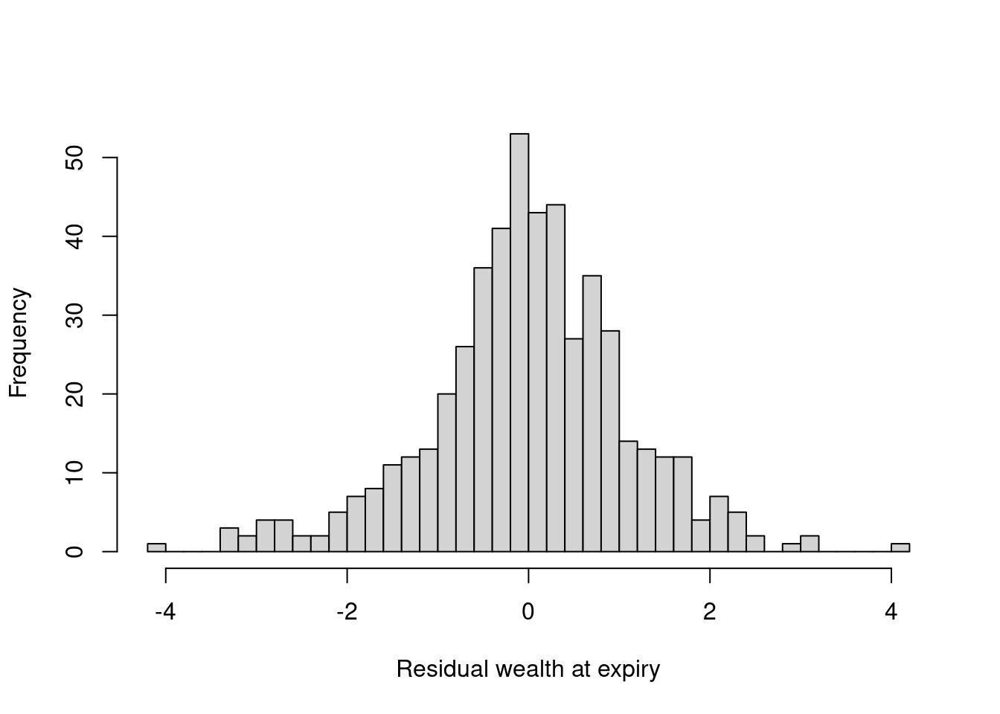

library(fInstrument)
library(empfin)
library(DynamicSimulation)
library(kableExtra){r tufte::newthought("The")} simulation framework has two main components:
A simulator, which can generate paths for the variables of interest (price of a asset, implied volatility, term structure of interest rate, etc.), according to a model that relates the variables to stochastic risk factors.
A framework for expressing trading strategies, and in particular dynamic hedging policies.
This is again best explained by an example, and we describe next the use of this framework for running a delta-hedging experiment. The main elements of the design are discussed afterwards.
Assume that you want to simulate 500 price paths over a period of one year, with 100 time steps. The price process will be log-normal with annual volatility of \(30\%\), starting from an initial value of \(\$100\).
dtStart <- myDate("01jan2010")
dtEnd <- myDate("01jan2011")
nbSteps <- 100
nbPaths <- 500Next, define the sequence of simulation dates and the volatility of the simulated log-normal process:
dtSim <- seq(dtStart, dtEnd, length.out = nbSteps +
1)
sigma <- 0.3Use a sobol sequence as random number generator, with antithetic variates, standardized to unit variance:
tSpot <- pathSimulator(dtSim = dtSim, nbPaths = nbPaths,
innovations.gen = sobolInnovations, path.gen = logNormal,
path.param = list(mu = 0, sigma = sigma), S0 = 100,
antithetic = FALSE, standardization = TRUE, trace = FALSE)
print(head(tSpot[, 1:2]))## GMT
## TS.1 TS.2
## 2010-01-01 00:00:00 100.0000 100.00000
## 2010-01-04 15:36:00 102.6500 96.17777
## 2010-01-08 07:12:00 104.7294 98.86367
## 2010-01-11 22:48:00 111.5401 98.42921
## 2010-01-15 14:24:00 106.2866 98.45289
## 2010-01-19 06:00:00 105.6459 93.62580The output of the path simulator is a
 Figure 4.1: Simulated price paths under a log-normal diffusion process
plot(tSpot[, 1:50], plot.type = "single", ylab = "Price",
format = "%b %d")Having generated some scenarios for the stock price, let’s now simulate the dynamic hedging of a European call option written on this stock, using the Black-Scholes pricing model, with the implied volatility and interest rate held constant.
Fist, we define the instrument to be hedged:
dtExpiry <- dtEnd
underlying <- "IBM"
K <- 100
a <- fInstrumentFactory("vanilla", quantity = 1, params = list(cp = "c",
strike = K, dtExpiry = dtExpiry, underlying = underlying,
discountRef = "USD.LIBOR", trace = FALSE))Next, we define the market data that will be held constant during the
simulation, and insert it in a
base.env <- DataProvider()
setData(base.env, underlying, "Price", dtStart, 100)
setData(base.env, underlying, "DivYield", dtStart,
0.02)
setData(base.env, underlying, "ATMVol", dtStart, sigma)
setData(base.env, underlying, "discountRef", dtStart,
"USD.LIBOR")
setData(base.env, "USD.LIBOR", "Yield", dtStart, 0.02)At this stage, we can price the asset as of the start date of the simulation:
p <- getValue(a, "Price", dtStart, base.env)which gives a value of \(p = 12.82\).
Next, define the simulation parameters: we want to simulate a dynamic hedging policy over 500 paths, and 100 time steps per path:
We use a child
sce.env <- DataProvider(parent = base.env)
setData(sce.env, underlying, "Price", time(tSpot),
as.matrix(tSpot))We can now run the delta-hedge strategy along each path:
assets = list(a)
res <- deltaHedge(assets, sce.env, params = list(dtSim = time(tSpot),
transaction.cost = 0), trace = FALSE)The result is a data structure that contains the residual wealth (hedging error) per scenario and time step. The distribution of hedging error at expiry is shown in Figure 4.2.
 Figure 4.2: Distribution of residual wealth at expiry: delta hedge of a 1 year call option
hist(tail(res$wealth, 1), 50, xlab = "Residual wealth at expiry",
main = "")To better illustrate the hedging policy, let’s run a toy example with
few time steps. The function
dtSim <- time(tSpot)[seq(1, dim(tSpot)[1], 10)]
res <- deltaHedge(assets, sce.env, params = list(dtSim = dtSim,
transaction.cost = 0), trace = FALSE)
sim.table <- makeTable(1, res)Two design features are worth mentioning.
The generation of the scenarios is independent from the expression of
the dynamic trading strategies. Remember that every data element stored
in a
The second aspect is the use of parent/child relationships among
This behavior is inherited from the built-in